Valve stem oil seal and valve spring removal (4JJ1)
1. Battery ground cable disconnect
1. Open the engine hood assembly.
2. Disconnect the battery ground cable from the battery.
Caution
- Do not disconnect within 1 minute after turning OFF the ignition switch.
3. Raise vehicle using the jack.
2. Engine hood assembly removal
1. Open the engine hood.
Note
- Support the engine hood.
- Disconnect the tube from the washer nozzle.
2. Remove the hinge bolt from the engine hood.
3. Remove the engine hood from the hinge.
Note
- Before removing the hinge from the engine hood, put a marking of the hinge location for putting the hinge back in place.

3. Underguard removal
Note
- The following applies to models with an under air deflector.
1. Remove the under air deflector from the frame.
Note
- Remove the 5 bolts and clip.

- Bolt
- Clip
Note
- The following applies to models with front and rear underguard.
2. Remove the front underguard from the frame.
Note
- Remove the 5 bolts.
3. Remove the rear underguard from the frame.
Note
- Remove the 4 bolts.
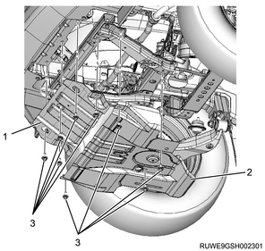
- Front underguard
- Rear underguard
- Bolt
Note
- The following applies to models with front and rear underguard and an oil pan guard.
4. Remove the front underguard from the frame.
Note
- Remove the 5 bolts.
5. Remove the oil pan guard from the frame.
Note
- Remove the 4 bolts.
6. Remove the rear underguard from the frame.
Note
- Remove the 4 bolts.

- Front underguard
- Oil pan guard
- Bolt oil pan guard
- Bolt
- Rear underguard
4. Engine cover removal
1. Remove the engine cover from the engine.

- Engine cover
5. Coolant drain
1. Drain coolant from the radiator.
Note
- Open the drain plug at the bottom of the radiator.

2. Remove the radiator cap from the radiator.
Warning
- In order to prevent burns, do not open the cap when the engine and radiator are hot.
- Heat liquid and steam may gush out by pressure.
6. Engine oil drain
1. Drain the engine oil from the oil pan.
Note
- After draining oil, tighten the drain plug to the specified torque.
Tightening torque： 44 N・m { 4.5 kgf・m / 32 lb・ft }
Caution
- Do not forget to tighten the drain plug.
7. Wiper arm cover removal
1. Remove the wiper arm cover from the wiper arm.
8. Wiper arm removal
1. Remove the wiper arm from vehicle.
Note
- Remove the nut to remove the wiper arm and the blade.

- Wiper arm cover
- Nut
- Wiper arm, blade
9. Side cowl cover removal
1. Remove the side cowl cover from the body.

- Side cowl cover
10. Cowl cover removal
1. Disconnect the washer hose from the clip.
2. Remove the grommet from the cowl panel.
Note
- Push the grommet down inside the cowl panel.

- Grommet
- Washer hose
3. Remove the cowl cover from the cowl panel.
11. Wiper linkage disconnect
1. Disconnect the wiper linkage from vehicle.
Note
- Remove the bolt and nut from the wiper linkage.
- Remove the connector from the wiper motor.

- Nut
- Bolt
12. Cowl panel removal
1. Remove the cowl panel from vehicle.
Note
- Remove the 8 bolts.

13. Intake air duct removal
1. Remove the intake air duct from the turbocharger and the intercooler.
Note
- Remove the part together with the intake hose.

14. Blow-by hose disconnect
1. Disconnect the blow-by hose from the cylinder head cover.
15. Air cleaner assembly removal
1. Disconnect the harness connector from the MAF sensor.
2. Disconnect the harness connector from the barometric pressure sensor.
3. Disconnect the vacuum hose from the air cleaner assembly.
4. Disconnect the intake pipe from the turbocharger assembly.
5. Remove the air cleaner assembly from vehicle.

- Air cleaner assembly
- MAF sensor
- Vacuum hose
- Blow-by hose
- Intake pipe
- Barometric pressure sensor
16. Boost pressure sensor disconnect
1. Disconnect the connector from the boost pressure sensor.

17. Intake air duct removal
1. Remove the intake air duct from the intake throttle valve and the intercooler.
Note
- Remove the part together with the intake hose.

18. Heater pipe removal
1. Disconnect the heater hose from the heater pipe.
Note
- Disconnect the 2 heater hoses together.

- Heater hose
2. Remove the heater pipe from the inlet manifold.

- Heater pipe
19. Battery removal
1. Disconnect the battery ground cable from the frame.
2. Disconnect the battery cable from the battery.
3. Remove the battery bracket from the frame.
4. Remove the battery from vehicle.

- Battery cable
- Battery bracket
- Earth
20. Radiator upper hose removal
1. Remove the radiator upper hose from the water outlet pipe and the radiator.

- Radiator upper hose
21. Radiator reserve tank removal
1. Disconnect the radiator reserve tank hose from the radiator.
2. Remove the radiator reserve tank from the upper fan guide.

22. Generator disconnect
1. Disconnect the harness from the generator.
23. A/C compressor drive belt removal
1. Remove the A/C compressor drive belt from the pulley.
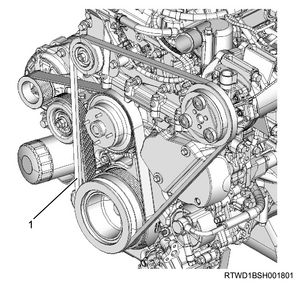
- A/C compressor drive belt
24. Cooling fan belt removal
1. Loosen the adjust bolt using a wrench.
Note
- Loosen the idle pulley tension adjust bolt.
2. Remove the cooling fan belt from the pulley.
25. Generator removal
1. Remove the upper bracket from the timing gear case and the generator.

2. Remove the generator from the lower bracket.
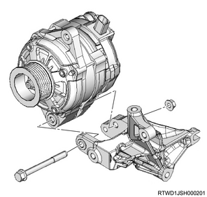
26. A/C compressor assembly disconnect
1. Remove the A/C compressor assembly from the A/C compressor bracket.

- A/C compressor bracket
- A/C compressor
27. A/C compressor bracket removal
1. Remove the A/C compressor bracket from the cylinder head.

28. Tension pulley removal
1. Remove the tension pulley from the cylinder head.

29. Fan guide removal
1. Remove the fan guide from the radiator.
Note
- Remove the clips and bottom locks on both sides and remove the upper fan guide.

- Upper fan guide
- Clip
- Lower fan guide
- Fan shroud
30. Cooling fan removal
1. Remove the cooling fan from the fan clutch assembly.

- Fan clutch assembly
- Cooling fan
31. Oil level gauge guide tube removal
1. Remove the oil level gauge from the oil level gauge guide tube.
2. Remove the oil level gauge guide tube from the crankcase.
32. Intake throttle valve disconnect
1. Disconnect the connector from the intake throttle valve.
33. Intake throttle valve removal
1. Remove the intake throttle valve from the inlet manifold.
2. Remove the gasket from the intake throttle valve.

- Intake throttle valve
- Gasket
34. EGR valve disconnect
1. Disconnect the connector from the EGR valve.
35. Vacuum hose disconnect
1. Disconnect the vacuum hose from the inlet manifold.
36. Fuel hose disconnect
1. Disconnect the fuel hose from the fuel supply pump.
2. Disconnect the fuel hose from the fuel leak-off pipe.
Caution
- Cover the exposed portion to prevent foreign material from getting into the fuel system.

- Fuel hose
37. Vacuum hose disconnect
1. Disconnect the vacuum hose from the vacuum pipe.
2. Remove the harness bracket from the inlet manifold and the common rail (fuel rail) bracket.
38. Leak-off pipe removal
1. Remove the leak-off pipe from the fuel supply pump and the common rail (fuel rail) assembly.
Caution
- Cover the exposed portion to prevent foreign material from getting into the fuel system.

- Leak-off pipe
39. Bracket removal
1. Disconnect the vacuum hose from the turbocharger control solenoid.
2. Disconnect the connector from the turbocharger control solenoid.
3. Remove the bracket from the cylinder head cover.
Note
- Remove as a set with the turbocharger control solenoid.
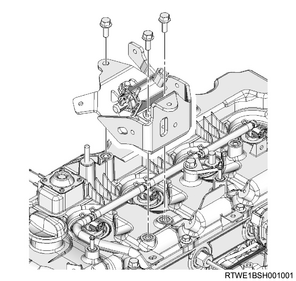
40. Injection pipe removal
1. Remove the clip from the injection pipe.
2. Remove the injection pipe from the injector and the common rail (fuel rail) assembly.

Caution
- Do not reuse the injection pipe.
41. Glow plug connector removal
1. Remove the glow plug connector from the glow plug.
Note
- Remove it together with the glow plug terminal.

- Glow plug terminal
- Glow plug connector
42. Glow plug removal
1. Remove the glow plug from the cylinder head.

- Glow plug
43. Water pipe removal
1. Disconnect the turbocharger water feed hose from the outlet pipe.
2. Remove the water pipe from the cylinder head assembly.

44. Water outlet pipe removal
1. Disconnect the turbocharger water feed hose from the water outlet pipe.
2. Remove the water outlet pipe from the cylinder head.
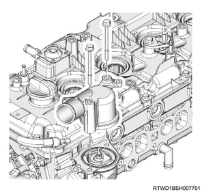
45. Thermostat removal
1. Remove the thermostat from the thermostat housing.
Caution
- Take care not to damage the thermostat.

- Thermostat
- Jiggle valve
46. Vacuum hose removal
1. Remove the vacuum hose from the turbocharger and the vacuum pipe.

47. Turbocharger water feed pipe disconnect
1. Disconnect the turbocharger water feed hose from the water feed and return pipe.

- Turbocharger water feed hose
- Turbocharger water return hose
48. Water hose disconnect
1. Disconnect the water hose from the EGR cooler.
Note
- Disconnect both the feed hose and the return hose.
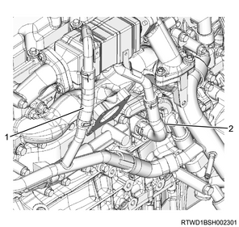
- Return hose
- Feed hose
49. Exhaust manifold heat protector removal
1. Remove the exhaust manifold heat protector from the exhaust manifold.


50. Turbocharger water return hose disconnect
1. Disconnect the turbocharger water return hose from the water feed and return pipe.
- Turbocharger water feed hose
- Turbocharger water return hose
51. Turbocharger feed oil pipe removal
1. Remove the turbocharger feed oil pipe from the turbocharger and the oil cooler.
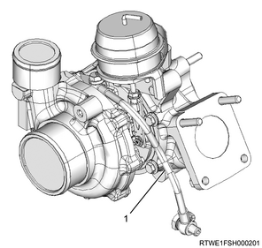
- Turbocharger feed oil pipe
52. Oil return pipe removal
1. Remove the oil return pipe from the turbocharger and the crankcase.
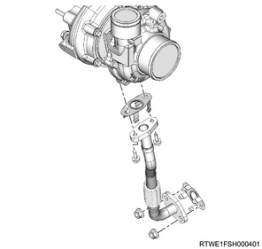
53. Catalyst converter removal
1. Disconnect the catalyst converter from the front exhaust pipe.
2. Disconnect the catalyst converter from the catalyst converter bracket.
3. Remove the catalyst converter from the turbocharger assembly.

4. Remove the catalyst converter bracket from the rear cover.
Note
- Remove the exhaust side from the engine side.
- Remove the engine side from the crankcase.

54. EGR water pipe removal
1. Disconnect the EGR water pipe from the water intake pipe.
2. Remove the EGR water pipe from the oil cooler.

55. Water intake pipe removal
1. Remove the water intake pipe from the oil filter and the oil cooler assembly.
Note
- Remove it with the hose attached.

56. Injector disconnect
1. Disconnect the connector from the injector.
57. Fuel leak-off hose removal
1. Remove the fuel leak-off hose from the leak-off pipe.
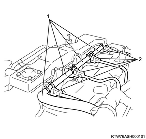
- Fuel leak-off hose
- Injector connector
Caution
- Do not reuse the clip of the fuel leak-off hose.
2. Remove the leak-off pipe from the injector.

- Injector leak-off pipe
- Clip
Caution
- Do not reuse the leak-off pipe and the clip.
58. Vacuum pipe removal
1. Remove the vacuum pipe from the cylinder head cover.
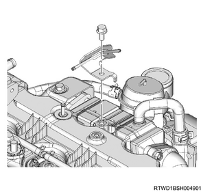
59. Cylinder head cover removal
1. Disconnect the harness clip from the cylinder head cover.

2. Remove the cylinder head cover from the cylinder head.

60. Injector removal
1. Remove the injector from the cylinder head.
Note
- Loosen the injector clamp fixing bolt to remove the injector clamp.
- If it is difficult to remove the injector, use a remover.
2. Remove the injector clamp from the injector.
Caution
- Cover the exposed portion to prevent foreign material from getting into the fuel system.
- Store the removed injector with the cylinder number on it.
- Take sufficient care not to hit the injector hole.
- Absolutely never touch the injector solenoids because that can hinder their performance or cause damage.
3. Remove the gasket from the injector.
4. Remove the O-ring from the injector.
61. Crankshaft adjustment
1. Align the No.1 cylinder to compression top dead center.
Note
- Turn the crankshaft in the forward direction (clockwise) to align the 1st cylinder piston to compression top dead center.

- Top dead center alignment mark on the gear case cover
- Top dead center alignment mark on the crank pulley
62. Baffle plate removal
1. Remove the baffle plate from the cylinder head.

63. Noise cover removal
1. Remove the noise cover from the timing chain lower cover.

64. Timing chain lower cover removal
1. Remove the timing chain lower cover from the gear case cover.
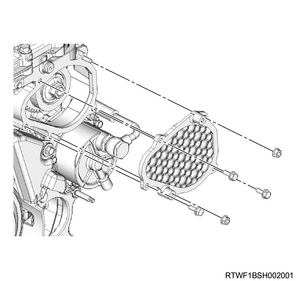
65. CMP sensor disconnect
1. Disconnect the connector from the CMP sensor.

- CMP sensor
66. Timing chain upper cover removal
1. Remove the timing chain upper cover from the cylinder head.

- Timing chain upper cover
67. Timing chain tensioner removal
1. Remove the oil pipe from the timing chain tensioner.
2. Remove the timing chain tensioner from the cylinder head.

- Oil pipe
- Timing chain tensioner
- Gasket
68. Timing chain lever pivot removal
1. Remove the timing chain lever pivot from the timing chain tension lever.

69. Timing chain removal
1. Remove the sprocket from the idle gear D.

2. Remove the timing chain from the cylinder head.
Note
- Remove the timing chain and sprocket as a set from the lower sprocket.
70. Timing chain tension lever removal
1. Remove the timing chain tension lever from the cylinder head assembly.
Note
- Pull out the timing chain tension lever.

71. Timing chain guide removal
1. Remove the timing chain guide from the cylinder head and the cylinder block.
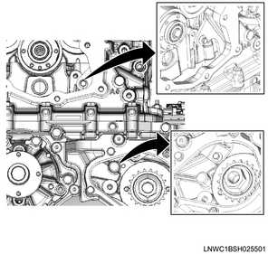
72. Camshaft bracket removal
1. Remove the camshaft bracket from the cylinder head.

- Camshaft bracket
- Cylinder head
73. Cylinder head assembly removal
1. Install the front engine hanger to the cylinder head.

SST: 5-8840-2999-0 - front engine hanger

- Front engine hanger
- M10 × 1.5 × 25 mm
- M10 × 1.5 × 25 mm
2. Install the rear engine hanger to the cylinder head.

SST: 5-8840-2886-0 - rear engine hanger

Tightening torque： 25 N・m { 2.5 kgf・m / 18 lb・ft }
3. Remove the nut from the timing gear case.
4. Remove the bolt from the timing gear case.

- Nut
- Bolt
5. Remove the head bolt from the cylinder head.
Note
- Loosen it in the order shown in the diagram.

Caution
- Do not reuse the head bolt.
6. Remove the cylinder head assembly from the cylinder block.
Note
- Install the wire to the engine hanger and the hoist to lift the cylinder head assembly.
74. Cylinder head gasket removal
1. Remove the cylinder head gasket from the cylinder head.
Caution
- Replace the removed cylinder head gasket with a new one.
75. Valve stem end cap removal
1. Remove the valve stem end cap from the valve stem.
76. Split collar removal
1. Remove the split collar from the valve using special tool.
Note
- Using a valve spring compressor adapter and valve spring compressor, compress the valve spring and remove the split collar.

SST: 5-8840-2865-0 - valve spring compressor adaptor
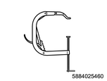
SST: 5-8840-2546-0 - valve spring replacer

- Valve spring compressor adapter
- Valve spring replacer
77. Spring upper seat removal
1. Remove the spring upper seat from the valve spring.
78. Valve spring removal
1. Remove the valve spring from the cylinder head.
Note
- Organize the removed valve springs in the order of the cylinder number.
79. Inlet valve removal
1. Remove the inlet valve from the cylinder head.
Note
- Organize the removed inlet valves according to the cylinders using tags, etc.
80. Exhaust valve removal
1. Remove the exhaust valve from the cylinder head.
Note
- Organize the removed exhaust valves according to the cylinders using tags, etc.

81. Valve stem oil seal removal
1. Remove the valve stem oil seal from the cylinder head using a pliers.

Caution
- Do not reuse the removed oil seal.
82. Spring lower seat removal
1. Remove the spring lower seat from the cylinder head.